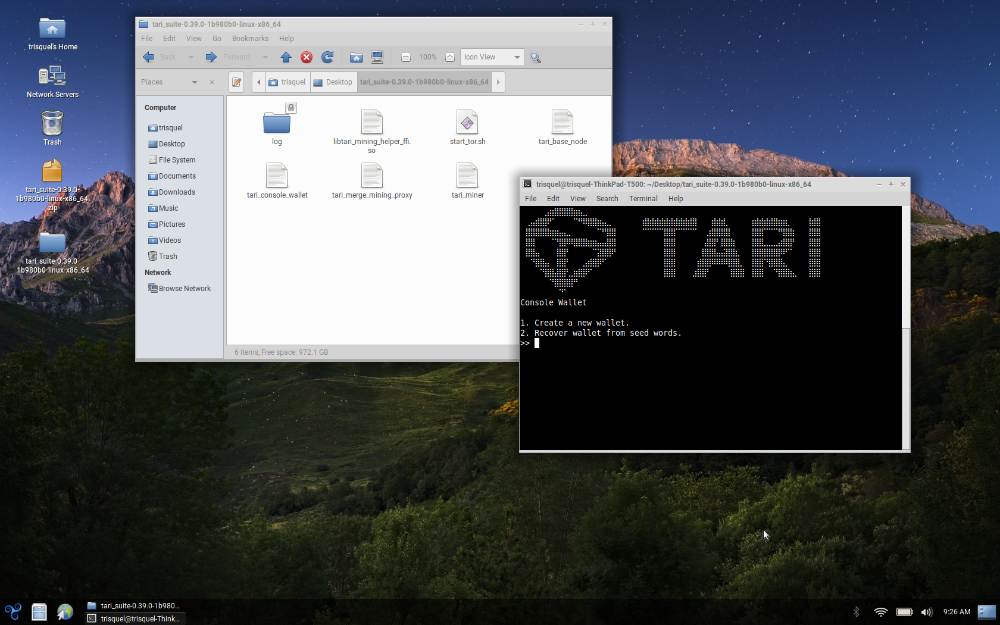
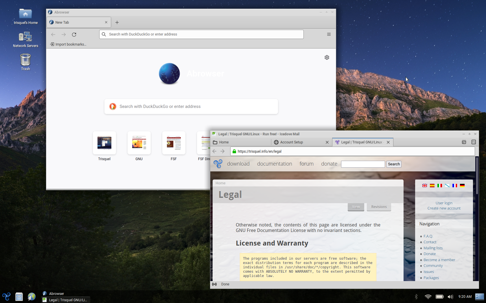

Tari believes in testing on hardware certified by the Free Software Foundation (FSF) as Respects Your Freedom (RYF). The RYF certification program encourages the creation and sale of hardware that accomplishes as much as possible to respect freedom, privacy, and control over devices. This means Free Software from the BIOS on up.

Many Lenovo Thinkpad models (often branded IBM) released over the past two decades are certified RYF due to their lack of proprietary firmware requirements and the ability to flash the BIOS with the Free Software replacement LibreBoot. Tari is currently testing on the Thinkpad T500 model, but the information below largely applies to all Thinkpad models listed on this wiki.
Information about RYF Thinkpad models is published by the FSF.
The BIOS is LibreBoot on models purchased from RYF-approved vendors such as Technoethical, Taurinus, and Vikings. Otherwise the BIOS must be flashed manually.
Models purchased from RYF-approved vendors ship with an Ubuntu derivative called Trisquel GNU/Linux

The system starts the Trisquel LXDE desktop environment when it boots.
The Tari suite x86_64 builds for Ubuntu will run on the Thinkpad T500 with Trisquel.
x86_64 build of tari_suite for Ubuntu from the Tari downloads page.unzip.Run the Tari binaries via the CLI.
NOTE The Tari suite start_all script requires the GNOME desktop environment. This DE is not recommended on this device so the script should be ignored or modified for Trisquel.
Tor is a dependency for Tari. It is installed on Trisquel by default. Control port 9051 will need to be open and configured in /etc/tor/torrc before the start_tor.sh script included with tari will run without errors. You may also run this command in the terminal:
tor --allow-missing-torrc --ignore-missing-torrc --clientonly 1 --socksport 9050 --controlport 127.0.0.1:9051 --log "warn stdout" --clientuseipv6 1
Remember to stop any currently-running instances of the tor daemon before doing so.
To start the Tari Base Node, execute the tari_base_node binary.
Commands:
To start the Tari Console Wallet, execute the tari_console_wallet binary.
Options:
You will be prompted to either create a new wallet and strong password for that wallet or recover an existing wallet from 24 seed words.
To start the Tari Miner, execute the tari_miner binary.
Ports 18141, 18142, and 18143 must be open to TCP traffic on localhost 127.0.0.1 for the miner to connect to the base node and wallet. These ports will need to be opened in the firewall using, for example, iptables or ufw. There is no graphical firewall application installed by default on Trisquel. gufw can be installed via apt:
sudo apt-get install gufw